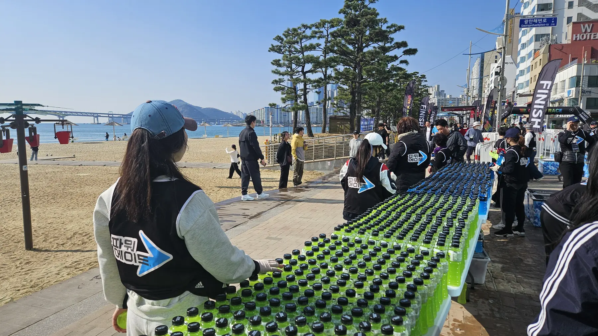
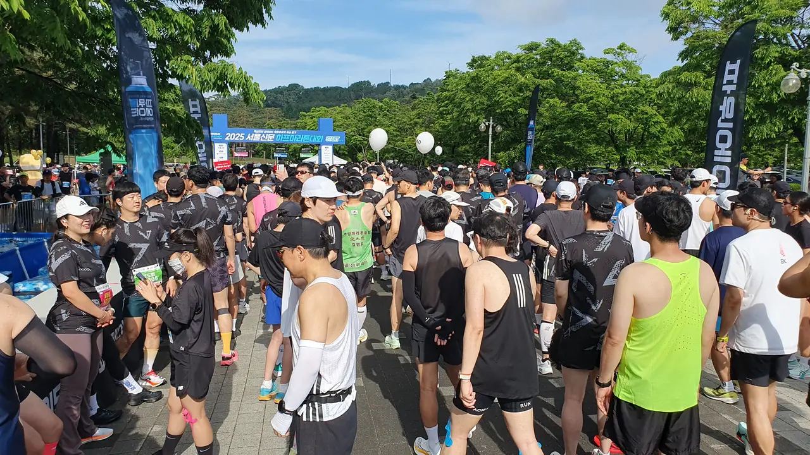

현장 운영 · 2026년 11월 17일
마라톤 급수대 안내 인력 운영 야외 행사 포인트
마라톤 급수대 안내 인력은 참가자의 흐름을 끊지 않는 위치와 역할 분담이 핵심입니다. 길게 이어지는 코스에서 급수대는 참가자가 속도를 늦추는 유일한 지점이라, 배치가 어긋나면 뒤에서 몰려 혼잡이 생깁니다. 이 글은 마라톤과 같은 야외 행사에서 급수대와 안내 인력을 어떻게 나눠 운영하는지 정리했습니다.

- 급수대는 참가자의 속도가 줄어드는 지점이라 혼잡이 생기기 쉽다
- 급수대마다 역할(준비, 전달, 정리, 안내)을 나누고 위치를 도면에 표시한다
- 야외 행사는 날씨 변수에 맞춘 대안과 교대 계획이 필요하다
- 출발 구역과 결승 구역은 급수대와 별도로 인력 계획을 세운다
야외 행사 인력 운영이 다른 점
실내 행사는 공간이 정해져 있지만 마라톤 같은 야외 행사는 길이 곧 행사장입니다. 코스가 길고, 참가자가 줄지어 이동하고, 날씨와 소음이 변수가 됩니다. 인력도 한 곳에 모여 있지 않고 코스 곳곳에 흩어져 서기 때문에 연락 체계가 더 중요합니다.
또 하나는 시간입니다. 야외 행사는 새벽에 준비를 시작해 오후에 철수하는 경우가 많아서, 인력의 교대와 휴식 계획이 없으면 후반에 집중력이 떨어집니다. 급수대 안내는 단순해 보여도 같은 동작을 오래 반복하는 일이라는 점을 기억해야 합니다.

마라톤 급수대 안내 인력의 역할
| 역할 | 하는 일 | 확인할 것 |
|---|---|---|
| 준비 | 물과 컵을 순서대로 놓고 보충합니다 | 보충 시점과 물품 보관 위치 |
| 전달 | 참가자에게 물과 음료를 건넵니다 | 참가자 속도를 막지 않는 서는 위치 |
| 정리 | 바닥에 버려진 컵과 쓰레기를 치웁니다 | 쓰레기통 위치, 정리 시점 |
| 안내 | 코스 방향과 급수대 이름을 알려 줍니다 | 안내 문구, 방향 표지판 |
| 연락 | 급수대 상황을 본부에 알립니다 | 연락 수단, 보고 기준 |
급수대가 길게 놓일수록 참가자가 한 번에 한꺼번에 지나가지 않게 하는 것이 중요합니다. 테이블을 한 줄이 아니라 앞뒤로 나눠 놓고, 전달 담당이 서는 위치를 정해 두면 속도가 줄어도 뒤에서 몰리지 않습니다.
출발 구역과 결승 구역
출발 구역은 참가자가 가장 많이 모이는 곳입니다. 급수대와 달리 짧은 시간에 한꺼번에 몰리는 구조라 안내 인력이 입구와 대기 구역, 출발선 쪽으로 나뉘어 서야 합니다. 출발 직전에는 안내보다 안전이 우선이라, 인력이 참가자 사이에서 움직이는 동선을 미리 정해 두어야 합니다.
결승 구역은 반대로 도착한 참가자가 한꺼번에 흩어지는 곳입니다. 물품 수령, 기록 확인, 휴식 안내가 겹치기 때문에 줄 방향과 수령 위치를 분리해 두면 혼란이 줄어듭니다.

날씨와 교대 계획
야외 행사에서는 날씨가 인력 계획을 바꿀 수 있습니다. 비가 오면 테이블 위치, 물품 보호, 바닥 미끄러움 안내가 새로 필요하고, 더운 날에는 인력의 휴식과 수분 보충이 더 중요합니다.
- 우천 시 물품을 어디로 옮길지, 누가 옮길지 미리 정합니다.
- 인력의 휴식 장소와 교대 순서를 시간표로 만듭니다.
- 코스가 길면 구간별로 연락 책임자를 정합니다.
- 철수 시간에는 쓰레기와 물품 정리를 마칠 때까지 인력이 남는 규칙을 정합니다.
에이전시와 준비하는 방법
지노컴퍼니의 서비스 영역에는 마라톤과 스포츠 이벤트, 지역 행사, 각종 페스티벌이 포함됩니다. 요청 때 코스 도면이나 행사장 사진, 일정을 함께 주시면 인력 구성과 배치 계획을 정리하는 데 큰 도움이 됩니다. 이용 절차는 이용 안내에서 볼 수 있습니다.
야외 행사에서 인력이 갑자기 더 필요해지면 긴급 지원 방식이 가능한지 상담 때 확인해 두세요. 견적은 견적 문의에서 받습니다.
자주 묻는 질문
급수대 인력은 따로 교육이 필요한가요?
동작은 단순하지만 위치와 역할, 보고 체계는 알려 주어야 합니다. 특히 참가자가 몰릴 때의 대처와 쓰레기 정리 시점은 행사 전에 맞춰 두는 편이 안전합니다.
비가 오면 급수대 운영은 어떻게 하나요?
테이블 위치와 물품 보호, 바닥 미끄러움 안내를 미리 계획해 둡니다. 실제 변경 여부는 주최 쪽 결정에 따르고, 인력은 그에 맞춰 위치를 조정합니다.
코스 곳곳의 인력과는 어떻게 연락하나요?
무전기나 메신저 중 하나를 정하고 구간별 연락 책임자를 둡니다. 연락이 닿지 않을 때의 대체 방법도 함께 정해 두세요.